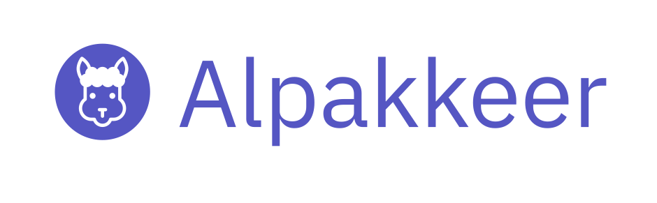

Alpakkeer

Documentation: cokeschlumpf.github.io/alpakkeer
GitHub Repository: github.com/cokeSchlumpf/alpakkeer
Alpakkeer is an opinionated Java+Scala toolkit to build, run and operate light-weight integration applications based on Akka Streams and Alpakka.
Alpakkeer bundles various libraries and components:
-
A Web Server based on Javalin to provide simple access via REST APIs to manage Akka Streams processes and expose metrics to Prometheus and Grafana.
-
Configuration Management based on Lightbend Config including some extensions for environment-based configurations and automatic mapping to POJOs.
-
Prometheus Client to record application and stream metrics. Alpakkeer also provides custom FlowStages to argument your stream with Akka Streams specific metrics.
-
Abstracted building blocks to compose streams based on Alpakka.
-
An easy to use DSL for Java and Scala to compose applications.
Getting Started
Add the dependency:
<dependency>
<groupId>io.github.cokeschlumpf</groupId>
<artifactId>alpakkeer-core</artifactId>
<version>0.0.1-SNAPSHOT</version>
</dependency>
compile group: 'io.github.cokeschlumpf', name: 'alpakkeer-core', version: '0.0.1-SNAPSHOT'
libraryDependencies += "io.github.cokeschlumpf" %% "alpakkeer-scaladsl" % "0.0.1-SNAPSHOT"
To use the latest snapshot version, add the snapshot repository to your configuration:
<repositories>
<repository>
<id>sonatype-oss</id>
<name>Sonatype OSS Repository</name>
<url>https://oss.sonatype.org/content/repositories/snapshots</url>
</repository>
</repositories>
repositories {
jcenter()
maven {
url "https://oss.sonatype.org/content/repositories/snapshots"
}
}
resolvers += "Sonatype OSS Snapshots" at "https://oss.sonatype.org/content/repositories/snapshots"
Start coding
import akka.stream.javadsl.Keep;
import akka.stream.javadsl.Sink;
import akka.stream.javadsl.Source;
import alpakkeer.core.scheduler.model.CronExpression;
import alpakkeer.javadsl.Alpakkeer;
public class HelloAlpakkeer {
public static void main(String ...args) {
Alpakkeer.create()
.withJob(jobs -> jobs
.create("hello-world")
.runGraph(b -> Source
.single("Hello World")
.toMat(Sink.foreach(System.out::println), Keep.right()))
.withScheduledExecution(CronExpression.everySeconds(10))
.withLoggingMonitor())
.start();
}
}
import akka.stream.scaladsl.{Keep, Sink, Source}
import alpakkeer.core.scheduler.model.CronExpression
import alpakkeer.javadsl.Alpakkeer
object HelloAlpakkeer extends App {
Alpakkeer.create()
.withJob(b => b
.create("hello-world")
.runGraph(Source
.single("Hello World!")
.toMat(Sink.foreach(println))(Keep.right)
.asJava)
.withLoggingMonitor()
.withScheduledExecution(CronExpression.everySeconds(10)))
.start()
}
Requirements
Java 11+, Scala 2.13
Alpakkeer runs on: Akka 2.6.4+, Akka Streams 2.6.4+, Javalin 3.8.0
License
This project is licensed under the terms of the Apache 2.0 License.